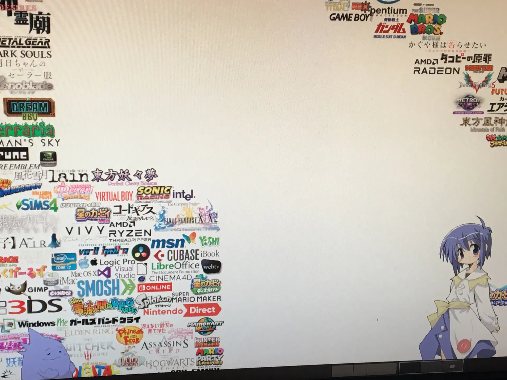
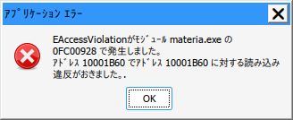
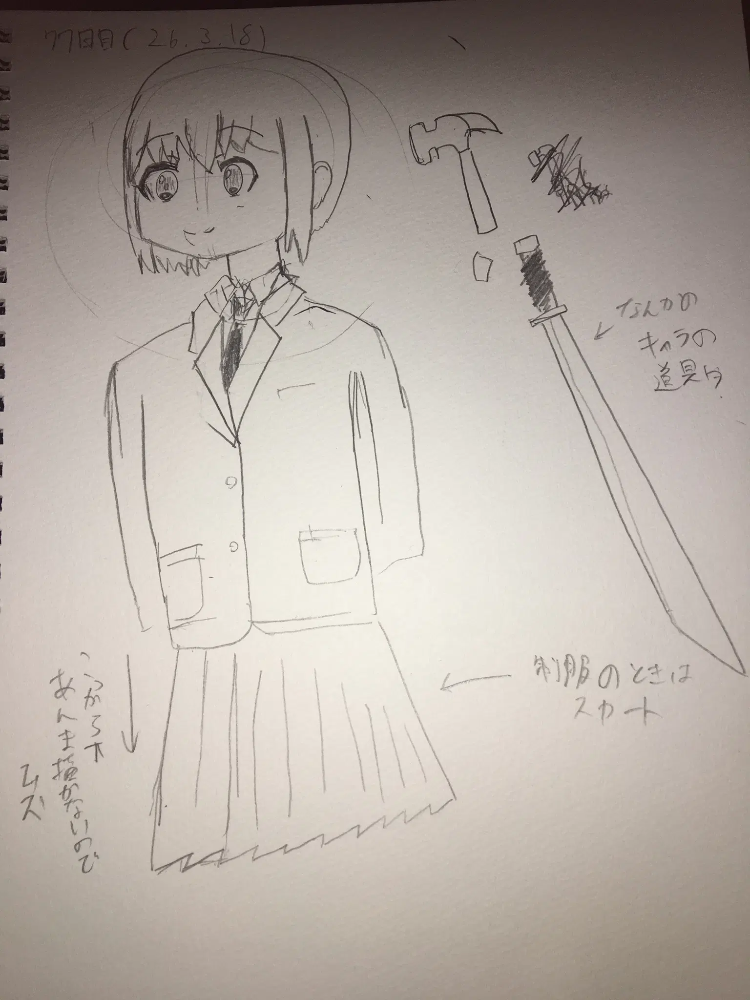

メインPCで伺か（SSP）上でさくらを動かすことに成功
ここ最近はメインPCのモニターをトリプルディスプレイにしたり、ショートカットキーをいくらか作成したり、いろいろデスクトップ環境を整備していました。
今欲しいのはThinkPadです。
ま、そんなことはさておき…
本題だよ Link to heading
いろいろ設定したら、メインPCで動かなかったさくらが動いてくれました。
（これのせいでサブノートPCの用途がなくなりほとんど放置状態に…）

かわいい（←これ重要）
どうやって動かした？ Link to heading
これだけのためにWineの32ビット用プロファイル？を作成しました。
これをやるまで以下のようなエラーが出てばかりでした。

どうにかするためにWineを再インストールしましたが、時間の無駄でした。
ならSteam（Proton）で動かしてやろうと思い、早速やりましたが、何故か文字化け。
最終的に新しいプロファイルを作成して、今に至ります。
最後に Link to heading
これのおかげで、多少はコマンドを扱えるようになったかも。定期的に使わないとどんどん忘れていくんでね
まあこれでメインPCでいつでもさくらを眺めることができます。というわけで、ブログ5日目でした。
さて、サブノートをどうするか。。。
お絵描きのコーナー Link to heading
77日目。
